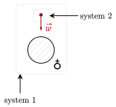

Now that we deal with not one object but multiple, we now have to deal with the energy of a system of objects. As of now, we currently have one equation for energy, that we (naïvely) called the "conservation of energy".
This potential and kinetic energy refers to the energy of the system we are analyzing. This assumes that there are no forces that change the energy of the system. However, if there were a force that changed the energy, it would do work onto it. This force would be external to the system.
Note that this definition depends, as usual, on the system chosen. For example, imagine a ball and the Earth. As the ball falls to Earth, there are two systems of note, being of the ball and Earth and of the ball itself.

In the first system, there are no external forces, and there is a potential energy present, being that of the gravitational potential energy between the Earth and the ball. Though, there is no external work on the system. Weight here is an internal force.
In the second system, there is no potential energy; recall that it is the arrangement of the objects in a system, and being only one object there is nothing to arrange. However, there is an external force acting on the system, now being of the weight of the object.
There is, however, a third system that is quite unconventional, being that of the Earth. By the Law of Interaction, the ball exerts a force itself onto the Earth. This causes a net external work to be done onto the system of the Earth.
Question 1
(HRK Q13.1) At the highest point of its trajectory a vertically tossed ball has zero kinetic energy. Where has the energy gone? Has external work been done on the ball? Is the energy now in the form of potential energy in the ball? Potential energy in the Earth?
Answer
The energy has gone nowhere. In the system of the Earth and ball, it has been transferred in the form of potential energy, however in the separate systems of the Earth and ball, it has been transferred via external work.
Exercise 1
(HRK E13.1) A projectile whose mass is 9.4 kg is fired vertically upward. On its upward flight, 68 kJ of mechanical energy is dissipated because of air drag. How much higher would it have gone if the air drag had been made negligible (for example, by streamlining the projectile)?
Solution
We take the system to be of the projectile and Earth. This does not include the air, which means that the air drag is an external force, causing an external work on the system. We first solve for height with the external work, and then solve for it without it.
Notice that when subtracting the larger height by the lower height, the change in kinetic energy term drops out.
Substituting in, we get the answer of 740m.
Now, consider the energy of the Joule's apparatus. It involves a motor placed inside of a container of water, which is spinned.

We take the system of the water, masses, and Earth. At some point, after stirring the water, the water will stop accelerating and will move at a constant velocity, and thus the change in kinetic energy as it hits that point is zero. There is no external force acting on the system.
The potential energy of the system is then just the two masses which can move. With our formula, however, it implies that there is no change in potential energy. This is clearly wrong.
If you recall from the branch of chemistry however, water is made out of tiny molecules, each moved via the stirrer in a different way. This causes the kinetic energy of those tiny molecules to change, which causes the water to become hotter. This must be where the energy is transferred into. We call this energy the internal energy of the system.
In other words, the change in potential energy of the two masses causes a change in the internal energy of the system. This change in internal energy can be attributed to the temperature of the water increasing.
Question 2
(HRK Q13.4) What happens to the internal energy of an ice skater when she skates up to the railing and then pushes herself to a stop?
Answer
Take the system of the ice skater. There is no potential energy in the system, and the force the railing applies on the skater does not cause a movement, so there is no external work.
The kinetic energy of the ice skater decreases as she goes to rest, so that means that the internal energy of the skater increases. Biologically, this could be related to how her muscles don't need to contract or extend that far anymore as she rests.
Question 3
(HRK Q13.27) A screwdriver is held tightly against a rotating grinding wheel. External work is done but the kinetic energy of the screwdriver does not change. Explain this apparent contradiction.
Answer
Take the system of the screwdriver. No potential energy is found in the system, and it thus note there is no change in speed and thus no change in kinetic energy.
This can be interpreted that the net work causes a change in the internal energy of the system. This can be attributed to the screwdriver heating up as the microscopic molcules within it heating up.